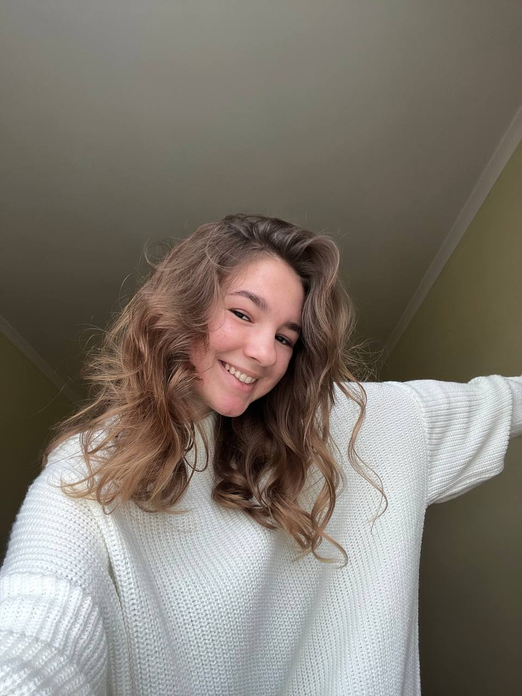

Каріна Гончарова
Привіт! Я студентка третього курсу кафедри графічного дизайну, фотографиня і генератор big ideas:)

Чому графічний дизайн?
Насправді, коли я поступила сюди у 2020 році сама не до кінця мала
уявлення, що вивчатиму. Лише базове поняття, що таке логотип та як
створюється візитка. Але ще жодного разу не пошкодувала про свій вибір, і
то файно))
За ці 2 роки була можливість спробувати себе у різному:
Створення логотипів (що було досить цікаво донедавна, але зараз відійшло
на задній план).
Дизайн фірмового стилю (туди ж віднесемо).
Дизайн поліграфії (був навіть тривалий досвід співпраці із вінницькою
поліграфією, але теж зрозуміла, що поки це не моє).
Типографія
Живопис, рисунок, ілюстрація (ОДНОЗНАЧНО НІ)
Верстка книги (хоч і спочатку було складно розібратися із програмою "In
Design", але цього семестру мене захоплює створеня власного візукального
стилю книги)
Веб-дизайн (поки подобається, а далі - побачимо:))
Але попри все, точно можу сказати, що я люблю і чим займаюсь вже декілька
років, і це фотографія.
Мої крайні роботи можна переглянути за посиланням
нижче:
Instagram: work page
Інші контакти:
Instagram: main page
Telegram